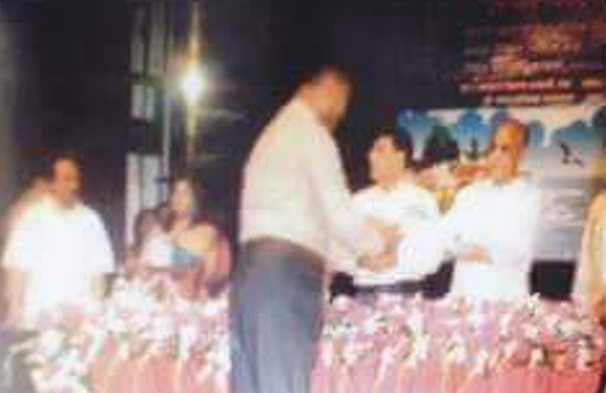

আমাদের হালদা নদী
Dr. Syed Arif Azad
Milestones and published stories reflecting the company's work across aquaculture, fisheries technology, and the Halda River.
In 2012, The Eureka Marketing Co. was honored as Third Prize Winner, Best Stall Category (Private Sector), at the Central Fish Fair, awarded by the Department of Fisheries under Bangladesh's Ministry of Fisheries and Livestock.

The company's connection to the Halda River fish-egg tradition was featured in Deepto TV's documentary program “Deepto Krishi,” covering natural fish offspring cultivation.
Dr. Syed Arif Azad
Dr. M. G. Hossain